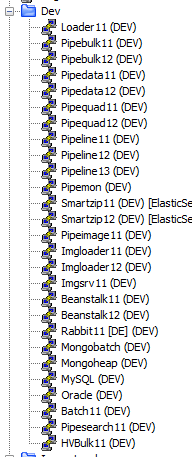

Dev Notes
---+ Fork repo:
Go to: https://github.dominionenterprises.com/Homes-Data
Find the repo
Click 'Fork'
---+ Create branch with ticket number:
Go to your account
Find the repo
Click on 'Branch' button and enter new branch name
---+ Clone it locally:
git clone https://github.dominionenterprises.com/victor-brunell/<repo-name>
---+ Set up repo to use ssh keys:
git remote set-url origin git://git@github.dominionenterprises.com/Homes-Data/<repo-name>
---+ Be sure to change the repo name to match the directory structure.
For example, if you cloned Pipeline-Impressions into ~/code/Pipeline:
cd ~/code/Pipeline
mv Pipeline-Impressions Impressions
Also, make sure any repo dependencies exist in their correct directories
and all environment files are up to date.
---+ Fetch and switch to the branch:
git fetch <remote-name>
git checkout <branch-name>
---+ Do some work to fix bugs or add features, then check the syntax:
perl -c myfile.pl
---+ Then stage, commit, push to remote branch:
git add <some-files>
git commit -m "a message"
git push origin <branch-name>
---+ Get on a dev server and clone the branch in the appropriate repo in /code:
ssh -vi ~/.ssh/serv-key brunellv@pipeline11.dev.homes.com
cd /code/<path-to-where-your-repo-should-exist>
git remote -v
git remote add brunell git@github.dominionenterprises.com:victor-brunell/<repo-name>.git
git fetch brunell
git checkout -b brunell/<branch-name>
---+ Run some tests:
Might need to add jobs to queues:
* Use a gen script.
* Find values to add to the script in the database.
For info on which queues to use:
* ask someone
* look up RabbitMQ or something like that in the code and try to track it down
* check environment.pm
Check environment.pm files in Common directories for relevant values like:
* Config initialization
* Queue or DB login info
To test workers:
perl myfile.perl --force --runonce // this runs the worker on a single job
perl myfile.perl // runs it on all jobs in the queue
---+ When the script finishes, check the logs.
For example:
If you run Pipeline code, check:
/code/Pipeline/Logs/
If you ran the listimp.pl script, check:
listimp.log.<servername>
---+ If there are bugs in the program, check the logs and see what printed last, then look for that
message in the code to see where the program stopped. Insert some print statements and run it
again to track down where it broke.
---+ When finished and PR accepted, clean up:
Remove Local Git Branches and leave master:
git branch | grep -v "master" | xargs git branch -D
Remove remote and local branch:
git push --delete <remote_name> <branch_name>
git branch -d <branch_name>
---+ If you need DB data, use DBeaver, run some queries, and extract data in whatever format:
* Run a query
* Select the resulting records
* Right click and select ExportResultSet
* scp the data onto the dev server
* Pop it open and extract it to stick it in a hash to send to the queue for jobs
The process is:
You'll see some statements in the code like "require "Pipeline/.../<file>".
The "Pipeline/.../" part is specific to a repo, so "/Pipeline/Common" would refer to the Pipeline-Common repo.
You can use this mechanic to walk through some of the other included code that those two starter repos use.
Use different SSH keys for production and dev.
Also, keep a local copy of both your private and public dev keys.
The dev servers get rebuilt every Sunday, and you'll have to put your keys back on-server after that unless you want to regenerate new dev keys for github every week.
Code in Pipeline/Bulk/<Feed-Name>/Interface.pm is used to package raw data coming from the various feeds, like DIDX. Has stuff like:
package_listing_data()
Code in Pipeline/Data holds the data worker that processes raw data from Pipeline/Bulk. Has stuff like:
if($job_message->{msg_type} eq 'listing') {
$res = DATA::INTERFACE::store_data(source_id => $job_data{source_id}, data => $job_data);
}
Code in Pipeline/Data/Oracle is actually code to store data processed by the data_worker into the MSSQL database. Has stuff like:
store_data()
lists of data points to store
When you make a change to code, be sure to update that repo's environment file (environment.pm or environment.py) by updating the version.
The basic rules are:
1.2.3 -> 1.3.0
1.4.0 -> 1.5.0
1.2.3 -> 1.2.4
1.5.0 -> 1.5.1
*1 = (This applies after a module is live on prod, if the module is not yet released to prod, and this is simply internal development on an upcoming initial release, then version updates appear unnecessary.)
is : pr / is : open
is : pr / is : open assignee:jason-tobias
is : pr / is : open reviewer:victor-brunell
git remote set-url origin git+ssh://git@github.dominionenterprises.com/Homes-Data/Pipeline-Autosuggest
Send:
scp /file/to/send brunellv@pipeline11.dev.homes.com:/where/to/put
Receive:
scp brunellv@pipeline11.dev.homes.com:/file/to/send /where/to/put
Find queue names:
Check the Pipeline-Common environment.pm file.
So to test this particular issue, you would need to create an impression job with an actual MLS number that has spaces in it.
Because none of our data has spaces in the MLS number, this indicates a malformed data case.
So you can easily just pull the top 1 live listing record from the dev database and add a trailing space to it, and push that into the impression queue.
Do that with the original code first, and verify that it fails.
Then do that again with your changed code, and verify that the impression is handled correctly.
Both of these things can be determine by viewing the logs, which exist in /code/Pipeline/Logs/ under listimp.log.
So your next question might be, "what is a live listing, and how do I get a decent one?"
The second list, as you can see, is the list of production servers.
Solr has 8 boxes, 11-18.
Most server groups typically have at least an 11, and usually a 12.
Ultimately, the dev ones are going to be your primary concern, and most of those are not used unless something specific is being worked on.
So for now, you can probably get away with just:


To view open tickets, sprints, etc, go to:
Ticket Site
Board --> DE Sprint Team 1
Click on the Assignee drop down
Select your name
Vagrant set up in ~/workspace/vagrant
Shared folder is /code. Can add files in this directory to share with the vagrant instance.
Common commands (vagrant aliased to v):
You should specify the output file, eg:
ssh-keygen -t rsa -f ~/.ssh/my-new-keythen to connect:
ssh -i ~/.ssh/my-new-key 192.168.x.xor setup a ssh config file:
nano ~/.ssh/configthen put something like:
Host my-server HostName 192.168.x.x User root Port 22 IdentityFile /home/username/.ssh/my-new-keyFinally:
ssh my-server
# +++++ Print out hash keys/values +++++ #
You can use the each function if you don't care about ordering:
while ( my($key, $value) = each %hash ) {
print "$key = $value\n";
}
Or the for / foreach construct if you want to sort it:
for my $key ( sort keys %hash ) {
print "$key = $hash{$key}\n";
}
Or if you want only certain values, you can use a hash slice, e.g.:
print "@hash{qw{2009 2010}}\n";
# +++++ Import Functions Selectively +++++ #
One of the places where you'll often see the use of qw is where modules are loaded. You might see something like this:
use Module::Name qw/foo $bar/;
From the above explanation you'll know that this is the same as
use Module::Name ('foo', '$bar');
This basically means we pass this list as parameters to the import function of Module::Name which will import the 'foo' function and the '$bar' scalar variable into our code.
# +++++ use with empty list +++++ #
If you do not want to call the package's import method (for instance, to stop your namespace from being altered), explicitly supply the empty list:
use Module ();
That is exactly equivalent to
BEGIN { require Module }
# +++++ use vs require +++++ #
The main difference is around import/export. use is preferred when you're making use of a module because it allows you to specify which routines you wish to import into your namespace :
# allows foo(), bar() and baz() to be used
use MyModule qw(foo bar baz);
# Requires explicit naming (e.g. MyModule::foo).
use MyModule qw();
use also gives runs the module's import() procedure which is often used to set the module up.
# +++++ @{$thing} or %{$thing} +++++ #
This is a reference to whatever that is being dereferenced and converted into its original type.
For example, for:
%{$records}
$records # must be a reference to a hash (because of the outermost %)
{$records} # is a block that returns the reference
%{$records} # gives the original hash
So @{$args{settings}} means $args is a hash that contains a reference to an array as the value for the key 'settings'.
# +++++ ref() return values +++++ #
According to the documentation, the possible return values of the ref() function are:
SCALAR
ARRAY
HASH
CODE
REF
GLOB
LVALUE
FORMAT
IO
VSTRING
Regexp
Passing a reference to a subroutine to the ref() function will result in the string CODE.
A file-handle created by the open function is a GLOB.
# +++++ hashes vs hash references +++++ #
The essential difference (....) is used to create a hash. {....} is used to create a hash reference
my %hash = ( a => 1 , b => 2 );
my $hash_ref = { a => 1 , b => 2 };
my %hash_of_hashrefs = (
a => {1 => 'one'},
b => {2 => 'two'}
) ;
my %hash_of_hashrefs_of_hashrefs = (
a => {
1 => 'one',
},
b => {
2 => {
3 => 'three',
4 => 'four',
},
},
);
In a bit more detail - {....} makes an anonymous hash and returns a reference to it wich is asigned to the scalar $hash_ref